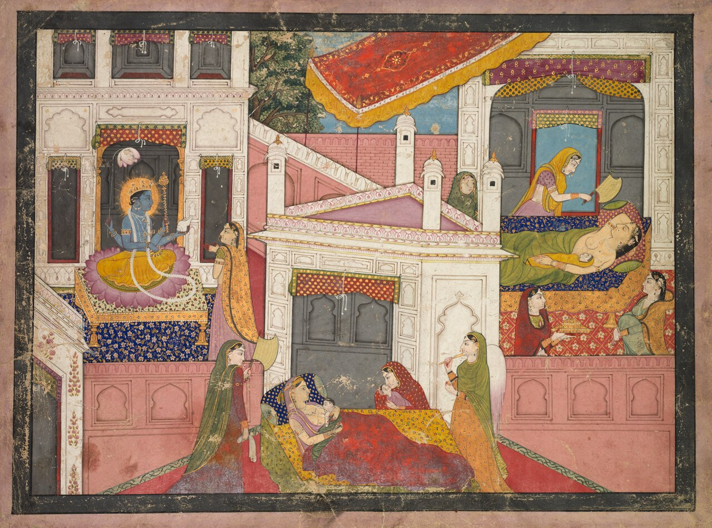
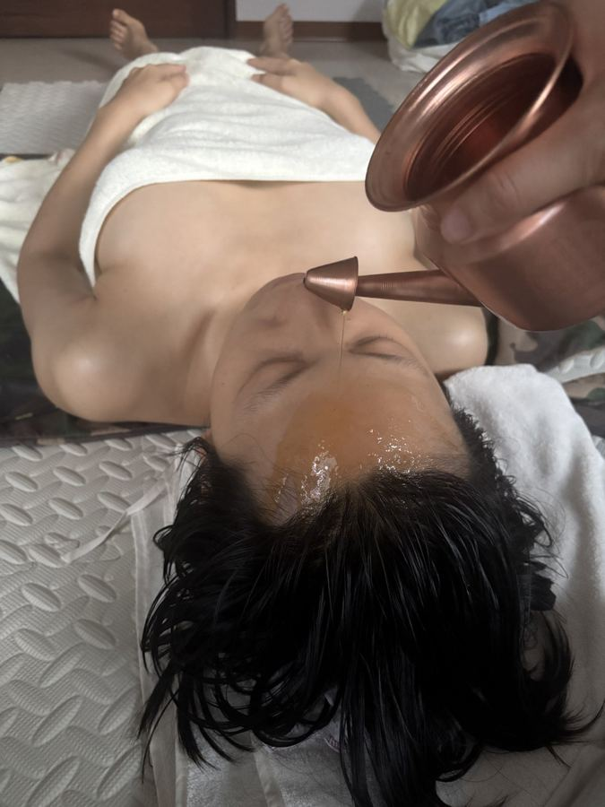
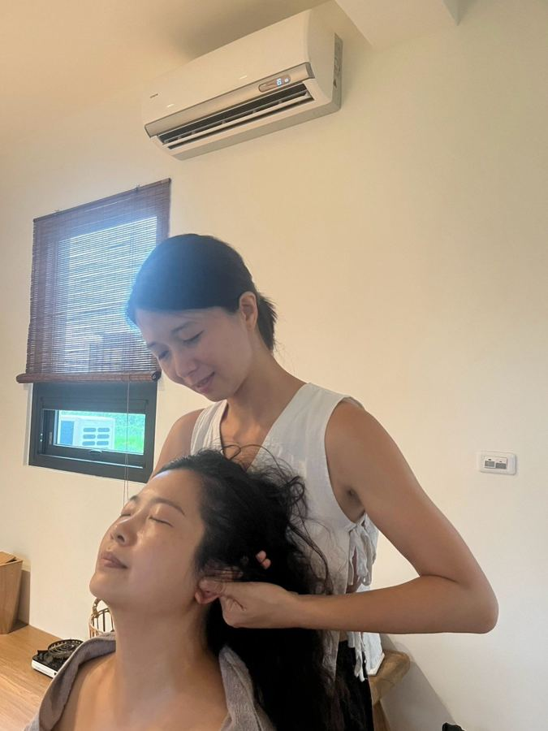
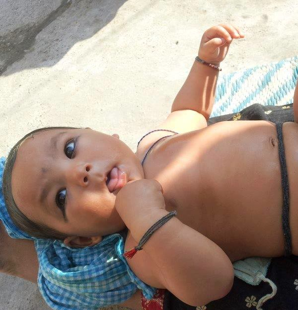
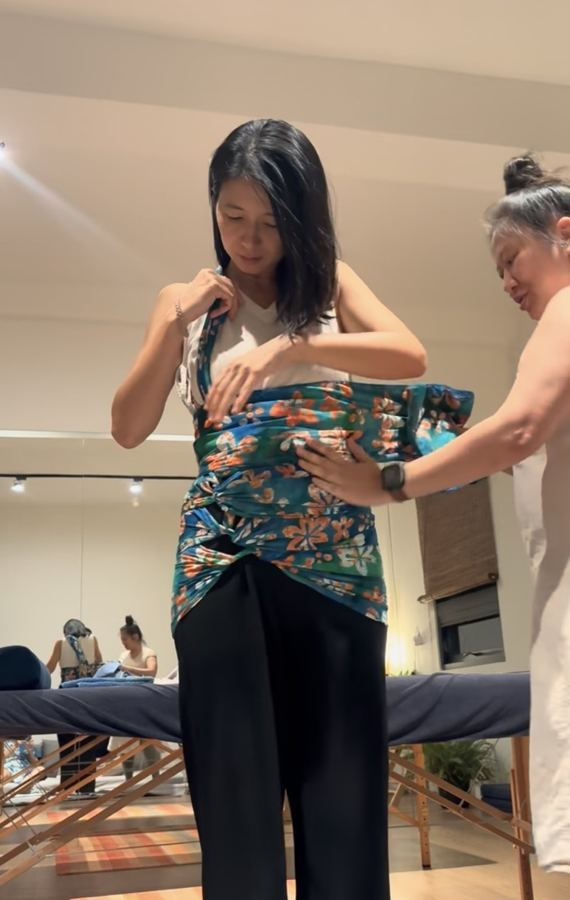
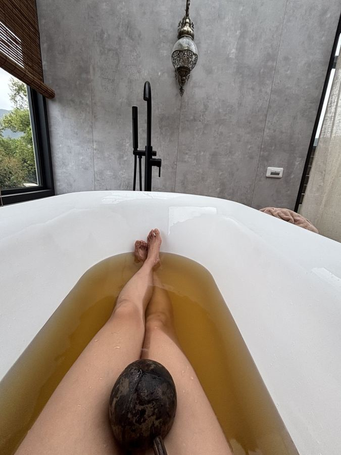

- 每天被抹油的四十天（本篇）
- 她不是保姆：Dai 的故事
- Jaapa 的廚房，和我想誠實說的事

第一次讀到印度的坐月子，我心裡一陣酸。
不是因為它神秘，而是因為它太日常了——每天、每天，有人用溫熱的油，一寸一寸地把妳的身體找回來。
在印度北部，這段產後休養期常被叫做 Jaapa（賈帕），一般說是 40 天。不過若回到阿育吠陀的古典文獻，產後照顧（Sūtikā Paricaryā，產婦照護）的期間說法不一，從 45 天到 6 個月都有，有的經典說要一直照顧到月經恢復。[1] 「40 天」比較像是民間流傳下來、大家都能記住的那個數字。
每天的主角：溫油按摩（Abhyanga）
印度坐月子裡最核心的一件事，就是按摩。
產後幾天開始，每天會有一位經驗豐富的婦女，用溫熱的芝麻油、芥末油，或特製的草藥油（例如以 Bala 草調製的 Bala Taila），為媽媽做全身油壓。肩頸、背、腰、腿、腳底，一處都不放過。
為什麼是油？
在阿育吠陀的眼光裡，生產是一場巨大的「空」——寶寶離開了，子宮空了，身體突然多出很多空間。而空，正是 Vāta（瓦塔，風能）最喜歡的地方。產後的乾、冷、緊繃、睡不好、腦袋停不下來，在阿育吠陀裡都被看成風能偏高的樣子。
油是溫的、重的、潤的，剛好跟風相反。所以產後照顧的原則裡，第一條就是「安撫風能」，而溫油按摩是最直接的方法。[1]

我在花蓮跟著 Sonia 老師學的第一件事，也是這個。手抹上溫油、貼上皮膚的那一刻，對方的呼吸會先慢下來。那不是理論，是我每次都能在手底下感覺到的事。

寶寶也被按摩
不只媽媽，寶寶也一樣每天被按摩。
在印度許多地方，嬰兒按摩是幾乎家家戶戶都做的日常。[2] 按完之後，傳統上會把寶寶抱到陽光下曬一曬。

這一段我想誠實地多說幾句（第三篇會再細談）：
- 用什麼油，有研究在討論。 印度傳統常用芥末油，但有研究發現芥末油可能延緩新生兒皮膚屏障的修復；在印度北方的大型試驗裡，改用葵花籽油的家庭，在嚴格照做的分析中新生兒死亡率較低，但整體分析並沒有顯著差異，另一項尼泊爾的研究也沒看到兩種油的差別。[3][4] 所以我會說：油的選擇值得注意，但不必恐慌。
- 曬太陽這件事，現代建議不一樣。 美國兒科醫學會（AAP）與 FDA 建議 6 個月以下的寶寶避免陽光直射，以遮蔭為主。[5] 寶寶要不要補充維生素 D、怎麼補，請和兒科醫師討論。
按完之後：一條長長的布
按摩結束，會用一條長棉布，把媽媽的腹部緊緊包起來，有點像我們熟悉的束腹帶。傳統認為這能幫助子宮回位、收縮，也防止「風」從肚子跑進去。
這個動作我很熟悉。在甘乃夏空間學的「束腹」，就是同一個精神：給剛生產完、還很鬆的核心一個穩穩的支撐。

不過要提醒：剖腹產的媽媽，要等傷口完全癒合（大約 3–4 週）再做腹部的綁縛與熱敷。這是我服務時一定會先確認的事。
不碰冷水，泡在藥草裡
跟華人的坐月子很像，印度的 Jaapa 也嚴格避開冷水和冷風。
媽媽洗澡用的是煮過的溫熱水，常加入楝樹葉（Neem）或其他藥草。有些家庭還會在房間裡燒特定的藥草或乳香，稱為 Dhupana（藥薰），用煙來「淨化」空氣，有時也用溫熱的藥煙薰蒸媽媽的下身。

楝樹葉的抗菌效果、藥煙的消毒作用，目前我沒有查到夠扎實的人體研究可以背書，所以這裡我只說「傳統這樣認為」。而且我自己會多想一步：剛出生的寶寶肺還很嫩，房間裡的煙，最好別讓寶寶一直吸（推測，是我的謹慎，不是研究結論）。
我在服務裡做的會陰薰蒸，用的是蒸氣，不是煙：把藥草煮成溫熱的藥草水，讓蒸氣溫和地照顧那個最辛苦的部位，全程有遮蓋。

我在這四十天裡看見的
讀了這麼多，我最有感的不是哪一種油、哪一種草藥。
而是：在這個文化裡，產後的女人，被預設是需要被照顧的。
不是「妳很棒，妳可以自己撐」，而是「妳剛走過一趟很遠的路，現在換我們來」。
每天有一雙手，固定出現。每天有溫熱的水、溫熱的油。那份「每天」，本身就是一種安全感——身體知道，明天還會有人來。
我上一份研究整理裡讀到，坐月子對產後情緒有沒有幫助，關鍵可能不是規矩做得多完整，而是「被支持的品質」。[6] 印度的 Jaapa，把這份支持做成了每天的觸碰。
邀請妳先停一下，深吸一口氣，問問自己：
生完之後，有沒有一雙手，好好地抱過妳？
如果答案是還沒有，那也不晚。🌿
下一篇，我想寫那雙手的主人——Dai（印度傳統產婆）。她們的故事，比我想像的更讓人心疼。 →
- 每天被抹油的四十天（本篇）
- 她不是保姆：Dai 的故事
- Jaapa 的廚房，和我想誠實說的事
資料來源
- Sūtikā Paricaryā 綜述（期間說法、安撫風能等原則）：JAIMS、JAIMS、IAMJ 2022（學術・阿育吠陀期刊）
- 坦米爾納德邦部落地區傳統新生兒照護研究：PMC10112755（學術）
- 印度北方葵花籽油 vs 芥末油試驗：Stanford Children's 摘要、AJCN 論文 PMC8970981（學術）
- 尼泊爾皮膚屏障研究：BMC Pediatrics（學術）
- FDA × AAP 嬰兒防曬建議：FDA（官方）
- 坐月子與產後憂鬱系統性回顧（Yang 2023）：PMC10615300（學術）
圖片來源
- 《Scenes from the Birth of Krishna》，India, Pahari, Kangra, 19th century，Cleveland Museum of Art，CC0，via Wikimedia Commons
- 〈Traditional Massage of Baby in Nepal〉，Ravijung，CC BY-SA 4.0，via Wikimedia Commons；本文使用時經裁切，裁切後版本同樣以 CC BY-SA 4.0 授權
- 其餘照片：Birth with Milliya 服務現場
本文為資訊整理，不構成醫療建議，也不能取代妳與醫師、助產師、兒科醫師的直接討論。